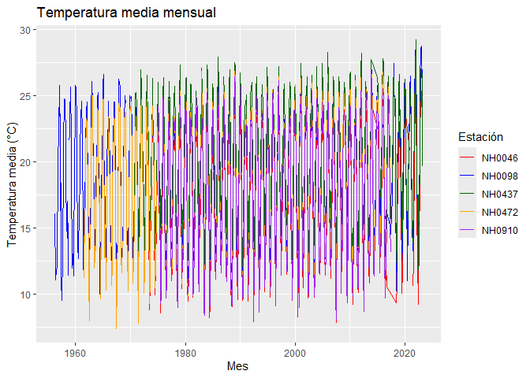

estacionesmet es un paquete de práctica para leer, procesar y analizar datos de estaciones meteorológicas del INTA. Fue creado como ejercicio de la materia Programación 2 y no está pensado para uso real.
Instalación
Podés instalar la versión de desarrollo de estacionesmet desde GitHub con:
# install.packages("pak")
pak::pak("bautistabusso/estacionesmet")Ejemplos
El paquete incluye el dataset estaciones, con datos diarios de cinco estaciones meteorológicas.
library(estacionesmet)
head(estaciones)
#> id fecha temperatura_abrigo_150cm temperatura_abrigo_150cm_maxima
#> 1 NH0472 1961-07-01 11.1 13.4
#> 2 NH0472 1961-07-02 5.5 10.5
#> 3 NH0472 1961-07-03 6.0 10.8
#> 4 NH0472 1961-07-04 NA NA
#> 5 NH0472 1961-07-05 12.4 14.8
#> 6 NH0472 1961-07-06 11.0 16.5
#> temperatura_abrigo_150cm_minima temperatura_intemperie_5cm_minima
#> 1 8.8 NA
#> 2 0.5 NA
#> 3 1.2 NA
#> 4 7.0 NA
#> 5 10.0 NA
#> 6 5.5 NA
#> temperatura_intemperie_50cm_minima temperatura_suelo_5cm_media
#> 1 NA NA
#> 2 NA NA
#> 3 NA NA
#> 4 NA NA
#> 5 NA NA
#> 6 NA NA
#> temperatura_suelo_10cm_media temperatura_inte_5cm
#> 1 NA NA
#> 2 NA NA
#> 3 NA NA
#> 4 NA NA
#> 5 NA NA
#> 6 NA NA
#> temperatura_intemperie_150cm_minima humedad_suelo precipitacion_pluviometrica
#> 1 NA NA 0
#> 2 NA NA 0
#> 3 NA NA 0
#> 4 NA NA 0
#> 5 NA NA 0
#> 6 NA NA 0
#> granizo nieve heliofania_efectiva heliofania_relativa tesion_vapor_media
#> 1 0 0 NA NA 9.8
#> 2 0 0 NA NA 7.9
#> 3 0 0 NA NA 7.5
#> 4 0 0 NA NA 14.9
#> 5 0 0 NA NA 17.2
#> 6 0 0 NA NA 11.5
#> humedad_media humedad_media_8_14_20 rocio_medio duracion_follaje_mojado
#> 1 NA 81 6.7 NA
#> 2 NA 80 3.6 NA
#> 3 NA 62 2.9 NA
#> 4 NA 93 12.9 NA
#> 5 NA 92 15.1 NA
#> 6 NA 80 9.0 NA
#> velocidad_viento_200cm_media direccion_viento_200cm
#> 1 14.4 NA
#> 2 4.8 NA
#> 3 7.2 NA
#> 4 8.8 NA
#> 5 4.8 NA
#> 6 14.4 NA
#> velocidad_viento_1000cm_media direccion_viento_1000cm velocidad_viento_maxima
#> 1 18 <NA> NA
#> 2 6 <NA> NA
#> 3 9 <NA> NA
#> 4 11 <NA> NA
#> 5 6 <NA> NA
#> 6 18 <NA> NA
#> presion_media radiacion_global radiacion_neta evaporacion_tanque
#> 1 NA NA NA NA
#> 2 NA NA NA NA
#> 3 NA NA NA NA
#> 4 NA NA NA NA
#> 5 NA NA NA NA
#> 6 NA NA NA NA
#> evapotranspiracion_potencial profundidad_napa horas_frio unidad_frio
#> 1 NA NA 0.000000 NA
#> 2 NA NA 15.600000 NA
#> 3 NA NA 14.500000 NA
#> 4 NA NA NA NA
#> 5 NA NA 0.000000 NA
#> 6 NA NA 3.272727 NAtabla_resumen_temperatura() calcula la media y el desvío de la temperatura de cada estación:
tabla_resumen_temperatura(estaciones)
#> # A tibble: 2 × 6
#> estadistico NH0046 NH0098 NH0437 NH0472 NH0910
#> <chr> <dbl> <dbl> <dbl> <dbl> <dbl>
#> 1 media 17.3 18.6 20.2 18.0 17.7
#> 2 desvio 5.90 5.98 5.77 5.94 6.12grafico_temperatura_mensual() grafica la temperatura media mensual:
grafico_temperatura_mensual(
estaciones,
colores = c("red", "blue", "darkgreen", "orange", "purple"),
titulo = "Temperatura media mensual"
)
Para descargar los datos de una estación se usa descargar_estacion():
descargar_estacion("NH0437", "datos/NH0437.csv")## Autores
- Bautista Busso (autor y mantenedor)
- Agustin Garro (autor)